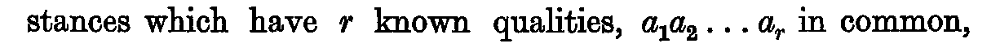
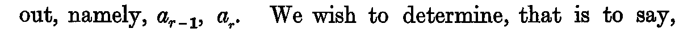
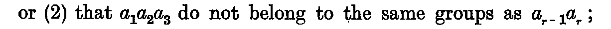
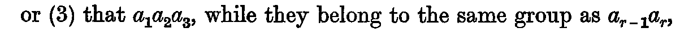
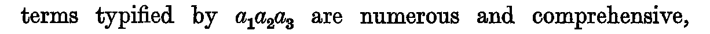
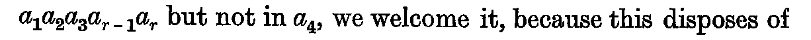
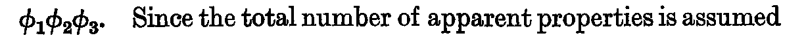
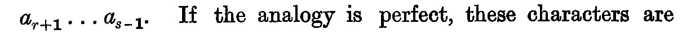
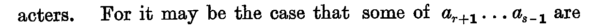
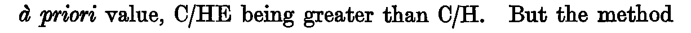

Chapter XXII. The Justification of these Methods
J. M. Keynes, A Treatise on Probability (London: Macmillan, 1921), first edition, pp. 251–264 (Cornell copy, PDF pp. 271–284). Formula atlas: every ledger row of the chapter beside the printed line it records.
| Ledger rows | 32 |
|---|---|
| Formulas | 3 (display 3, inline 0; items 3, numbered 0) |
| Formulas by Lean status | ✓3 ≈0 ✎0 未0 |
| Notation | 25 (with a Lean counterpart 16) |
| Reference rows | 4 |
Every count on this page is computed from the census ledger, which is built from the page images of the 1921 first edition only (no translation, OCR or e-text is used to count). A formula is an expression containing a relation sign (=, ≠, <, >, ≤, ≥, ≡, ⊃, → and their printed variants, including formulas inside figures, tables and footnotes, and formulas quoted from other authors); a display formula counts one per printed line, so a chain of equalities set over three lines counts three, and an inline formula counts one per expression. A compound expression without a relation sign (such as a/h, g(φ, f) or x1x2…xn/ġh) is counted separately as notation; a bare symbol, even with subscripts, primes or bars, is not counted. Footnote formulas follow the same rule, and a formula reprinted on another page is counted again. The Lean column of a formula row takes one of four values, fixed mechanically: ✓ the printed relation appears as stated in a theorem (only the names of bound variables, Lean notation and the layout of subscripts may differ); ≈ a theorem states an algebraically equivalent form (cleared denominators, a definition substituted, a change of variables); ✎ the printed line is refuted or not derivable, and a corrected form is proved; 未 none of these (a line inside a proof, a definition only, or no counterpart).
ch22-001

- Transcription
a₁a₂ . . . a_r- Lean
- Nphase9c/posAnalogy, phase9c/th_22_1
- Anchor words
which have r known qualities,/in common- Remarks
- F22.1
- Crop
- folio 252, x 125–1335, y 808–859 (full-size scan pixels)
ch22-002
- Transcription
a₁, a₂, a₃,- Lean
- Rphase9c/prem_22_2
- Anchor words
are picked out, namely,- Remarks
- 補則 1 の裸記号 — 参考行 (第 1 回は行内・記法として数えていた; 数えない)。F22.2
- Crop
- folio 252, x 125–1335, y 908–959 (full-size scan pixels)
ch22-003

- Transcription
a_{r−1}, a_r.- Lean
- Rphase9c/concl_22_2
- Anchor words
we have picked out, namely,- Remarks
- 補則 1 の裸記号 — 参考行 (第 1 回は行内・記法として数えていた; 数えない)。F22.2
- Crop
- folio 252, x 125–1335, y 1059–1109 (full-size scan pixels)
ch22-004
- Transcription
a_{r−1}, a_r- Lean
- Rphase9c/concl_22_2, phase9c/BoundUp, phase9c/th_22_2
- Reprint of
- ch22-003
- Anchor words
whether the qualities/are bound up with- Remarks
- 補則 1 の裸記号 — 参考行 (第 1 回は行内・記法として数えていた; 数えない)。F22.2
- Crop
- folio 252, x 125–1335, y 1108–1160 (full-size scan pixels)
ch22-005
- Transcription
a₁, a₂, a₃.- Lean
- Rphase9c/prem_22_2
- Reprint of
- ch22-002
- Anchor words
bound up with the qualities- Remarks
- 補則 1 の裸記号 — 参考行 (第 1 回は行内・記法として数えていた; 数えない)。F22.2
- Crop
- folio 252, x 125–1335, y 1159–1210 (full-size scan pixels)
ch22-006

- Transcription
a₁a₂a₃- Lean
- Nphase9c/prem_22_2
- Anchor words
or (2) that/do not belong to the same groups as- Remarks
- F22.3 (2)。(1) の
a_{r−1} or a_rは裸記号 - Crop
- folio 252, x 125–1335, y 1608–1659 (full-size scan pixels)
ch22-007
- Transcription
a_{r−1}a_r ;- Lean
- Nphase9c/concl_22_2
- Anchor words
the same groups as- Remarks
- F22.3 (2)
- Crop
- folio 252, x 125–1335, y 1608–1659 (full-size scan pixels)
ch22-008

- Transcription
a₁a₂a₃,- Lean
- Nphase9c/prem_22_2
- Reprint of
- ch22-006
- Anchor words
or (3) that/, while they belong- Remarks
- F22.3 (3)
- Crop
- folio 252, x 125–1335, y 1658–1709 (full-size scan pixels)
ch22-009
- Transcription
a_{r−1}a_r,- Lean
- Nphase9c/concl_22_2
- Reprint of
- ch22-007
- Anchor words
the same group as/, are not sufficient- Remarks
- F22.3 (3)。後続の
a_{r−1} and a_rは裸記号 - Crop
- folio 252, x 125–1335, y 1658–1709 (full-size scan pixels)
ch22-010
- Transcription
a_{r−1}a_r- Lean
- Nphase9c/th_22_4 (結論側の包括性の部分のみ)
- Reprint of
- ch22-007
- Anchor words
the terms typified by/are numerous and comprehensive- Remarks
- F22.4 前半
- Crop
- folio 252, x 125–1335, y 1907–1958 (full-size scan pixels)
ch22-011

- Transcription
a₁a₂a₃- Lean
- 未(群構造の仮定を要する; phase9c/th_22_4 の対象外)
- Reprint of
- ch22-006
- Anchor words
the terms typified by/are numerous and comprehensive, because this decreases- Remarks
- F22.4 後半
- Crop
- folio 252, x 125–1335, y 2106–2158 (full-size scan pixels)
ch22-012

- Transcription
a₁a₂a₃a_{r−1}a_r- Lean
- 未
- Anchor words
agrees with the former instances in/but not in a₄- Remarks
- F22.5。添字間にコンマなし
- Crop
- folio 253, x 125–1335, y 253–304 (full-size scan pixels)
ch22-013
- Transcription
a_{r−1}a_r.- Lean
- 未
- Reprint of
- ch22-007
- Anchor words
that is bound up with- Remarks
- F22.5
- Crop
- folio 253, x 125–1335, y 352–405 (full-size scan pixels)
ch22-014
- Transcription
φ₁φ₂φ₃. . . .- Lean
- Nphase9c/ax_22_limited_independent_variety (生成子有限の仮定を追加公理として)
- Anchor words
which we may call- Remarks
- F22.6。ピリオド 1 個+省略点 3 個
- Crop
- folio 253, x 125–1335, y 1911–1962 (full-size scan pixels)
ch22-015
- Transcription
φ₁φ₂- Lean
- 未
- Anchor words
those which arise out of/in conjunction form another group- Remarks
- F22.6
- Crop
- folio 253, x 125–1335, y 2061–2114 (full-size scan pixels)
ch22-016
- Transcription
φ₁φ₂φ₃,- Lean
- 未
- Anchor words
out of three generator properties- Remarks
- F22.7
- Crop
- folio 254, x 125–1335, y 178–255 (full-size scan pixels)
ch22-017

- Transcription
φ₁φ₂φ₃.- Lean
- 未
- Reprint of
- ch22-016
- Anchor words
may be said to specify the group- Remarks
- F22.7
- Crop
- folio 254, x 125–1335, y 303–356 (full-size scan pixels)
ch22-018
- Transcription
g(φf)- Lean
- Nphase9c/gen, phase9c/g_
- Anchor words
i.e. if the generalisation/is valid- Remarks
- F22.8。コンマなし (第19章は
g(φ, f); 既存台帳 T2) - Crop
- folio 254, x 125–1335, y 1159–1210 (full-size scan pixels)
ch22-019
- Transcription
g/h = p₀, where p₀ is finite,- Lean
- ✓phase9c/p_0 (def 本体), phase9c/th_22_9_src (0 < p_0)
- Anchor words
If x_r, etc., are the instances,- Remarks
- F22.9。第 1 行。「where p₀ is finite」は th_22_9_src の 0 < p_0。帰結は phase9c/th_22_9
- Crop
- folio 254, x 125–1335, y 1456–1513 (full-size scan pixels)
ch22-020
- Transcription
x_r/gh = 1, etc.,- Lean
- ✓phase9c/ax_22_10_instances_certain (公理の文)
- Reprint of
- ch20-002
- Anchor words
g/h = p₀, where p₀ is finite,(直前)- Remarks
- F22.10。第 2 行。第20章 F20.1 の再掲。帰結 x₁…xₙ/gh = 1 は phase9c/th_22_10
- Crop
- folio 254, x 125–1335, y 1512–1574 (full-size scan pixels)
ch22-021
- Transcription
x_r/x₁x₂ . . . x_{r−1}ḡh = 1 − ε, where ε is finite.- Lean
- ✓phase9c/ax_22_11_eps_finite (公理の文)
- Anchor words
and- Remarks
- F22.11。第 3 行、左端に
and。等号 (第20章 folio 237 は<; 索引 E-III-2、E または T)。公理文は左辺を Lean 側の略名 y_ で書く (細則 6 裁定事項 A′; 添字のずらし)。phase9a/th_22_254_eq_src の仮定 hq も同形。等号形と不等号形の関係は phase9c/th_22_11_src, phase9a/th_E_III_2_not_lt, th_E_III_2_refutes_F20_16, th_22_254_eq_exact, th_E_III_2_eq_imp_le - Crop
- folio 254, x 125–1335, y 1573–1647 (full-size scan pixels)
ch22-022
- Transcription
a₁a₂ . . . aₙ.- Lean
- Nphase9c/qualSet
- Anchor words
may be represented by- Remarks
- F22.13。
a_r,a_s(集合) は裸記号 - Crop
- folio 255, x 125–1335, y 814–865 (full-size scan pixels)
ch22-023

- Transcription
a_{r+1} . . . a_{s−1}.- Lean
- 未
- Anchor words
may be represented by- Remarks
- F22.14
- Crop
- folio 255, x 125–1335, y 1315–1368 (full-size scan pixels)
ch22-024

- Transcription
a_{r+1} . . . a_{s−1}- Lean
- 未
- Reprint of
- ch22-023
- Anchor words
that some of/are necessary as well as a_r- Remarks
- F22.14
- Crop
- folio 255, x 125–1335, y 1467–1517 (full-size scan pixels)
ch22-025
- Transcription
a_{r+1} . . . a_{s−1}- Lean
- 未
- Reprint of
- ch22-023
- Anchor words
neglecting certain of the characters/by direct judgments of irrelevance- Remarks
- F22.14
- Crop
- folio 255, x 125–1335, y 1667–1718 (full-size scan pixels)
ch22-026
- Transcription
C/H,- Lean
- Nphase9c/ax_22_17_CH_finite, phase9c/th_22_17
- Anchor words
a general hypothesis H such that- Remarks
- F22.17。頁末; 「the à priori probability of our conclusion, has a finite value」は 260 冒頭
- Crop
- folio 259, x 125–1335, y 2147–2200 (full-size scan pixels)
ch22-027

- Transcription
C/HE- Lean
- Nphase9c/th_22_18, phase9c/inductive_method, phase9c/F22_18_needs_premisses
- Anchor words
à priori value,/being greater than C/H.- Remarks
- F22.18。「being greater than」は語 (関係記号なし)。索引 T 候補 (前提 E/CH = 1, E/H < 1 の補充)
- Crop
- folio 260, x 125–1335, y 301–352 (full-size scan pixels)
ch22-028
- Transcription
C/H.- Lean
- Nphase9c/th_22_18
- Reprint of
- ch22-026
- Anchor words
being greater than- Remarks
- F22.18
- Crop
- folio 260, x 125–1335, y 301–352 (full-size scan pixels)
ch22-029
- Transcription
C/H- Lean
- Nphase9c/inductive_method
- Reprint of
- ch22-026
- Anchor words
the method of strengthening/by the addition of evidence E- Remarks
- F22.18
- Crop
- folio 260, x 125–1335, y 351–402 (full-size scan pixels)
ch22-030
- Transcription
H/H′- Lean
- Nphase9c/ax_22_19_HH'_finite
- Anchor words
such that/has a finite value- Remarks
- F22.19
- Crop
- folio 260, x 125–1335, y 500–552 (full-size scan pixels)
ch22-031
- Transcription
H/H′.- Lean
- Nphase9c/th_22_19
- Reprint of
- ch22-030
- Anchor words
to strengthen the probability- Remarks
- F22.19。索引 T 候補 (前提 E′/HH′ = 1, E′/H′ < 1 の補充)
- Crop
- folio 260, x 125–1335, y 601–654 (full-size scan pixels)
ch22-032
- Transcription
C/H- Lean
- Nphase9c/inductive_method
- Reprint of
- ch22-026
- Anchor words
the process of strengthening/by the addition E- Remarks
- F22.19 (inductive method の定義文)
- Crop
- folio 260, x 125–1335, y 754–805 (full-size scan pixels)